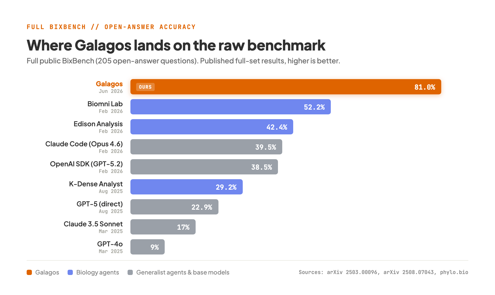
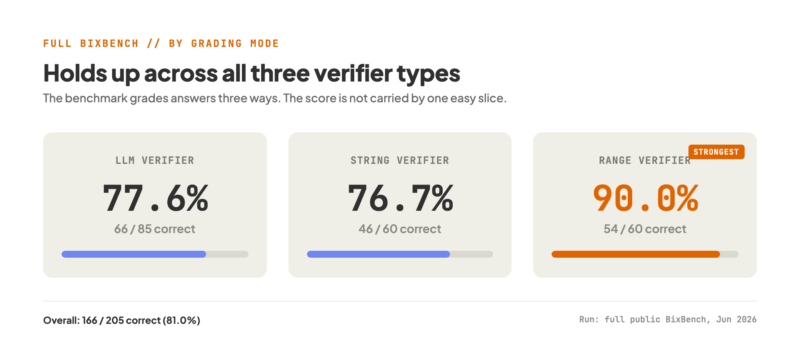

A few weeks ago we wrote about BixBench-Verified-50, a cleaned 50-question subset of a biology-agent benchmark where Galagos scored 92.0%. The cleaning mattered. Removing ambiguous questions and fixing wrong answer keys is what lets a score mean something. But a fair question came back to us more than once: what happens on the full benchmark, the raw one, with all of its noise still in?
So we ran it. Galagos went through the entire public BixBench set, all 205 questions, end to end, and got 166 of them right. That is 81.0%. For reference, when FutureHouse introduced BixBench in early 2025, the best frontier model of the day reached 17% on the same open-answer task.
The other number worth putting up front is the cost. The full run, 205 complete analyses from raw data to a committed answer, cost about 178 euros, or roughly 87 cents per analysis. None of those analyses is a lookup. Each one means loading a real dataset, writing and running code, debugging it, reading the output, and landing on a number. That is the kind of task that takes a trained analyst the better part of an afternoon.

What the full benchmark actually is
BixBench is built from real bioinformatics analysis capsules. Each one is a dataset and a notebook drawn from a published study, paired with questions an analyst would have to answer by actually doing the work: differential expression, enrichment, survival analysis, variant interpretation, and so on. The agent is handed the data, not the answer, and has to produce the analysis itself.
The full public set is the raw version. Unlike the verified subset, nobody has gone through it to remove the ambiguous questions or correct the answer keys. That makes it harder in a way that has little to do with biology. Some questions have two defensible answers. A handful of ground-truth values are simply wrong. On the raw set a perfect score is not actually available, because some of the marked answers do not match what a careful analyst would conclude. We will come back to that.
Where this lands next to other systems
There is no single official leaderboard for the full BixBench the way there is for the verified subset, so the honest move is to gather the published full-set numbers and put them side by side, with dates, because the field has moved quickly.
| System | Accuracy | Reported |
|---|---|---|
| Galagos | 81.0% | Jun 2026 |
| Biomni Lab | 52.2% | Feb 2026 |
| Edison Analysis | 42.4% | Feb 2026 |
| Claude Code (Opus 4.6) | 39.5% | Feb 2026 |
| OpenAI Agents SDK (GPT-5.2) | 38.5% | Feb 2026 |
| K-Dense Analyst | 29.2% | Aug 2025 |
| GPT-5 (direct) | 22.9% | Aug 2025 |
| Claude 3.5 Sonnet | 17% | Mar 2025 |
| GPT-4o | 9% | Mar 2025 |
Read this table with caution. The results come from different groups, different agent harnesses, and different underlying models, and crucially they were not all run on an identical question set. The original paper described a 296-question benchmark; the public release we ran has 205. Some of the 2026 numbers are re-runs by Phylo on their own harness. None of this is a controlled head-to-head. What the table does show is a direction: the full benchmark went from mostly out of reach to mostly solvable in about a year, and Galagos sits at the front of that move.
Why 81% understates the result
Here is the part the raw number hides. Because the full set still carries its noise, some of the 39 misses are not Galagos getting biology wrong. They are reasonable answers marked against a debatable key.
A clean example is a gene-ontology question on a fibroblast RNA-seq capsule. The expected answer was "potassium ion transmembrane transport." Galagos ran the full differential-expression and enrichment pipeline correctly and reported "regulation of membrane potential" as the single most enriched process, because it had the lowest raw p-value in the result. Both terms are real, both sit at the top of the same enrichment table, and the original paper for that dataset cites both. The analysis was sound. It was marked wrong because the key expected the other defensible term. That is exactly the kind of noise the verified subset was built to remove, and on the full set it counts against the score.
Not every miss is like this, and most are not. But it is worth knowing that 81% on the raw set is closer to a floor than a ceiling on what the same run would score once the questions are cleaned. The verified subset is the evidence for that: on it, the same approach scored 92.0%.
Breakdown by grading mode
BixBench grades answers three ways. An LLM judges open-ended responses, an exact-string check handles named answers, and a numeric range check handles quantities. Galagos held up across all three, which matters because it means the score is not propped up by one easy slice.

| Verifier type | Correct | Total | Accuracy |
|---|---|---|---|
| LLM verifier | 66 | 85 | 77.6% |
| String verifier | 46 | 60 | 76.7% |
| Range verifier | 54 | 60 | 90.0% |
The range result is the one we watch most closely. Numeric range questions are where a small methodological slip shows up directly as a wrong number, and they are the closest thing in the benchmark to a working analysis: a quantity that has to hold up to a second look. Galagos landed 90% of them inside the accepted bounds.
Where the misses cluster
Of the 39 misses, a striking share come from just a few capsules rather than being spread evenly as random slips. One capsule alone accounts for four of the six missed range questions: Galagos took a wrong path early and the error propagated through every quantity that depended on it. On the open-answer side, the two largest clusters come from two capsules, one contributing four misses and the other three.
That clustering is the useful signal. It says the failures are concentrated in a small number of analyses where the agent took a wrong turn and did not recover, not a thin layer of carelessness across the whole set. Some of these same questions also show up in the published miss lists of other strong systems, which suggests they sit at the genuinely hard edge of the benchmark rather than pointing to a weakness specific to us. Those concentrated failures are where the next round of harness work goes.
Grading the process, not just the answer
One honest caveat carries over from the verified-50 result. 81% is a result-based score. It compares final answers to a ground truth and says nothing about how each answer was reached. Phylo, whose work the verified subset comes from, makes the point well: final-answer grading cannot tell a sound method from a lucky guess, and for analytical work that throws away most of the evaluation signal. A reasonable method that lands on a slightly different number scores the same zero as a real mistake, which is precisely what happened on the gene-ontology question above.
That happens to be the bet Galagos is built on. Every step of every run is logged and reproducible, so the trace is there to read, not reconstructed after the fact. A confident answer reached by a shaky route is still a problem, and the point of a recorded trace is that you can catch it. Trace-based evaluation, grading the analytical steps the way peer review reads a methods section rather than just the abstract, is the test we want to be measured on, and it is coming. For now a clean result-based score is a fair first checkpoint, and on the raw benchmark this is where Galagos lands.
Why it matters
The leaderboard position is not the bigger point, partly because there is no official board for the full set. The point is what the trend line says. A year ago the best models cleared 17% of these tasks. Clean up the grading and the questions, and the strongest agents now clear most of them. On the raw set, with the noise still in and at a cost of about 87 cents per analysis, Galagos answered four in five correctly.
That is the picture we see on the platform. The value is not in producing a nice-looking answer and hoping. It is in doing the analysis, picking reasonable methods, writing down what was done, and getting to a number that holds up to a second look. Galagos is a generalist agentic platform for bioinformatics, with every step logged and reproducible and every byte hosted in the EU. A benchmark like this is one checkpoint for whether that approach stands up to scrutiny. On the full set, it did.
Benchmarks only get you so far. The hardest scientific work is rarely a fixed short-answer test. Real research is messy datasets, fuzzy problem definitions, partial context, shifting goals, and an output format that depends on the decision downstream. No benchmark today captures the whole picture, and BixBench makes no such claim. But the raw set is a useful, unforgiving checkpoint for where these systems are right now. Galagos scored 81.0% at that checkpoint.
Try it on your own data
If you want to pressure-test a real analysis rather than a benchmark, that is the standard that matters most. Bring a dataset and a question you actually care about, and see how far Galagos gets on it. Start an analysis and judge it on your own hardest problem.
Sources
- Original benchmark and baseline scores (FutureHouse): arXiv:2503.00096, "BixBench: a Comprehensive Benchmark for LLM-based Agents in Computational Biology"
- Full-set result for K-Dense Analyst and base models: arXiv:2508.07043
- Recent full-set results and the evaluation argument (Phylo): phylo.bio, "Evaluating AI Agents in Biology"
- Dataset: huggingface.co/datasets/futurehouse/BixBench
Galagos result from our own full BixBench run, completed June 2026 (166 of 205 correct, 81.0%). Other figures as published on the dates above and current at time of writing.